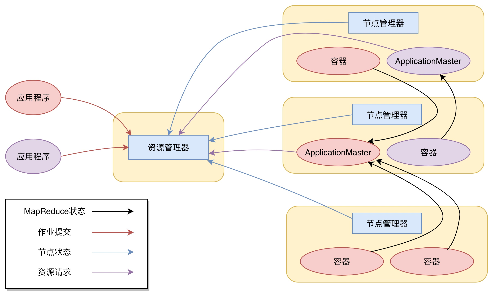

09 | 为什么我们管Yarn叫作资源调度框架
我们知道，Hadoop 主要是由三部分组成，除了前面我讲过的分布式文件系统 HDFS、分布式计算框架 MapReduce，还有一个是分布式集群资源调度框架 Yarn。但是 Yarn 并不是随 Hadoop 的推出一开始就有的，Yarn 作为分布式集群的资源调度框架，它的出现伴随着 Hadoop 的发展，使 Hadoop 从一个单一的大数据计算引擎，成为一个集存储、计算、资源管理为一体的完整大数据平台，进而发展出自己的生态体系，成为大数据的代名词。
所以在我们开始聊 Yarn 的实现原理前，有必要看看 Yarn 发展的过程，这对你理解 Yarn 的原理以及为什么被称为资源调度框架很有帮助。
先回忆一下我们学习的 MapReduce 的架构，在 MapReduce 应用程序的启动过程中，最重要的就是要把 MapReduce 程序分发到大数据集群的服务器上，在 Hadoop 1 中，这个过程主要是通过 TaskTracker 和 JobTracker 通信来完成。
这个方案有什么缺点吗？
这种架构方案的主要缺点是，服务器集群资源调度管理和 MapReduce 执行过程耦合在一起，如果想在当前集群中运行其他计算任务，比如 Spark 或者 Storm，就无法统一使用集群中的资源了。
在 Hadoop 早期的时候，大数据技术就只有 Hadoop 一家，这个缺点并不明显。但随着大数据技术的发展，各种新的计算框架不断出现，我们不可能为每一种计算框架部署一个服务器集群，而且就算能部署新集群，数据还是在原来集群的 HDFS 上。所以我们需要把 MapReduce 的资源管理和计算框架分开，这也是 Hadoop 2 最主要的变化，就是将 Yarn 从 MapReduce 中分离出来，成为一个独立的资源调度框架。
Yarn 是“Yet Another Resource Negotiator”的缩写，字面意思就是“另一种资源调度器”。事实上，在 Hadoop 社区决定将资源管理从 Hadoop 1 中分离出来，独立开发 Yarn 的时候，业界已经有一些大数据资源管理产品了，比如 Mesos 等，所以 Yarn 的开发者索性管自己的产品叫“另一种资源调度器”。这种命名方法并不鲜见，曾经名噪一时的 Java 项目编译工具 Ant 就是“Another Neat Tool”的缩写，意思是“另一种整理工具”。
下图是 Yarn 的架构。

从图上看，Yarn 包括两个部分：一个是资源管理器（Resource Manager），一个是节点管理器（Node Manager）。这也是 Yarn 的两种主要进程：ResourceManager 进程负责整个集群的资源调度管理，通常部署在独立的服务器上；NodeManager 进程负责具体服务器上的资源和任务管理，在集群的每一台计算服务器上都会启动，基本上跟 HDFS 的 DataNode 进程一起出现。
具体说来，资源管理器又包括两个主要组件：调度器和应用程序管理器。
调度器其实就是一个资源分配算法，根据应用程序（Client）提交的资源申请和当前服务器集群的资源状况进行资源分配。Yarn 内置了几种资源调度算法，包括 Fair Scheduler、Capacity Scheduler 等，你也可以开发自己的资源调度算法供 Yarn 调用。
Yarn 进行资源分配的单位是容器（Container），每个容器包含了一定量的内存、CPU 等计算资源，默认配置下，每个容器包含一个 CPU 核心。容器由 NodeManager 进程启动和管理，NodeManger 进程会监控本节点上容器的运行状况并向 ResourceManger 进程汇报。
应用程序管理器负责应用程序的提交、监控应用程序运行状态等。应用程序启动后需要在集群中运行一个 ApplicationMaster，ApplicationMaster 也需要运行在容器里面。每个应用程序启动后都会先启动自己的 ApplicationMaster，由 ApplicationMaster 根据应用程序的资源需求进一步向 ResourceManager 进程申请容器资源，得到容器以后就会分发自己的应用程序代码到容器上启动，进而开始分布式计算。
我们以一个 MapReduce 程序为例，来看一下 Yarn 的整个工作流程。
1. 我们向 Yarn 提交应用程序，包括 MapReduce ApplicationMaster、我们的 MapReduce 程序，以及 MapReduce Application 启动命令。
2.ResourceManager 进程和 NodeManager 进程通信，根据集群资源，为用户程序分配第一个容器，并将 MapReduce ApplicationMaster 分发到这个容器上面，并在容器里面启动 MapReduce ApplicationMaster。
3.MapReduce ApplicationMaster 启动后立即向 ResourceManager 进程注册，并为自己的应用程序申请容器资源。
4.MapReduce ApplicationMaster 申请到需要的容器后，立即和相应的 NodeManager 进程通信，将用户 MapReduce 程序分发到 NodeManager 进程所在服务器，并在容器中运行，运行的就是 Map 或者 Reduce 任务。
5.Map 或者 Reduce 任务在运行期和 MapReduce ApplicationMaster 通信，汇报自己的运行状态，如果运行结束，MapReduce ApplicationMaster 向 ResourceManager 进程注销并释放所有的容器资源。
MapReduce 如果想在 Yarn 上运行，就需要开发遵循 Yarn 规范的 MapReduce ApplicationMaster，相应地，其他大数据计算框架也可以开发遵循 Yarn 规范的 ApplicationMaster，这样在一个 Yarn 集群中就可以同时并发执行各种不同的大数据计算框架，实现资源的统一调度管理。
细心的你可能会发现，我在今天文章开头的时候提到 Hadoop 的三个主要组成部分的时候，管 HDFS 叫分布式文件系统，管 MapReduce 叫分布式计算框架，管 Yarn 叫分布式集群资源调度框架。
为什么 HDFS 是系统，而 MapReduce 和 Yarn 则是框架？
框架在架构设计上遵循一个重要的设计原则叫“依赖倒转原则”，依赖倒转原则是高层模块不能依赖低层模块，它们应该共同依赖一个抽象，这个抽象由高层模块定义，由低层模块实现。
所谓高层模块和低层模块的划分，简单说来就是在调用链上，处于前面的是高层，后面的是低层。我们以典型的 Java Web 应用举例，用户请求在到达服务器以后，最先处理用户请求的是 Java Web 容器，比如 Tomcat、Jetty 这些，通过监听 80 端口，把 HTTP 二进制流封装成 Request 对象；然后是 Spring MVC 框架，把 Request 对象里的用户参数提取出来，根据请求的 URL 分发给相应的 Model 对象处理；再然后就是我们的应用程序，负责处理用户请求，具体来看，还会分成服务层、数据持久层等。
在这个例子中，Tomcat 相对于 Spring MVC 就是高层模块，Spring MVC 相对于我们的应用程序也算是高层模块。我们看到虽然 Tomcat 会调用 Spring MVC，因为 Tomcat 要把 Request 交给 Spring MVC 处理，但是 Tomcat 并没有依赖 Spring MVC，Tomcat 的代码里不可能有任何一行关于 Spring MVC 的代码。
那么，Tomcat 如何做到不依赖 Spring MVC，却可以调用 Spring MVC？如果你不了解框架的一般设计方法，这里还是会感到有点小小的神奇是不是？
秘诀就是 Tomcat 和 Spring MVC 都依赖 J2EE 规范，Spring MVC 实现了 J2EE 规范的 HttpServlet 抽象类，即 DispatcherServlet，并配置在 web.xml 中。这样，Tomcat 就可以调用 DispatcherServlet 处理用户发来的请求。
同样 Spring MVC 也不需要依赖我们写的 Java 代码，而是通过依赖 Spring MVC 的配置文件或者 Annotation 这样的抽象，来调用我们的 Java 代码。
所以，Tomcat 或者 Spring MVC 都可以称作是框架，它们都遵循依赖倒转原则。
现在我们再回到 MapReduce 和 Yarn。实现 MapReduce 编程接口、遵循 MapReduce 编程规范就可以被 MapReduce 框架调用，在分布式集群中计算大规模数据；实现了 Yarn 的接口规范，比如 Hadoop 2 的 MapReduce，就可以被 Yarn 调度管理，统一安排服务器资源。所以说，MapReduce 和 Yarn 都是框架。
相反地，HDFS 就不是框架，使用 HDFS 就是直接调用 HDFS 提供的 API 接口，HDFS 作为底层模块被直接依赖。
Yarn 作为一个大数据资源调度框架，调度的是大数据计算引擎本身。它不像 MapReduce 或 Spark 编程，每个大数据应用开发者都需要根据需求开发自己的 MapReduce 程序或者 Spark 程序。而现在主流的大数据计算引擎所使用的 Yarn 模块，也早已被这些计算引擎的开发者做出来供我们使用了。作为普通的大数据开发者，我们几乎没有机会编写 Yarn 的相关程序。但是，这是否意味着只有大数据计算引擎的开发者需要基于 Yarn 开发，才需要理解 Yarn 的实现原理呢？
恰恰相反，我认为理解 Yarn 的工作原理和架构，对于正确使用大数据技术，理解大数据的工作原理，是非常重要的。在云计算的时代，一切资源都是动态管理的，理解这种动态管理的原理对于理解云计算也非常重要。Yarn 作为一个大数据平台的资源管理框架，简化了应用场景，对于帮助我们理解云计算的资源管理很有帮助。
Web 应用程序的服务层 Service 和数据持久层 DAO 也是上下层模块关系，你设计的 Service 层是否按照框架的一般架构方法，遵循依赖倒转原则？